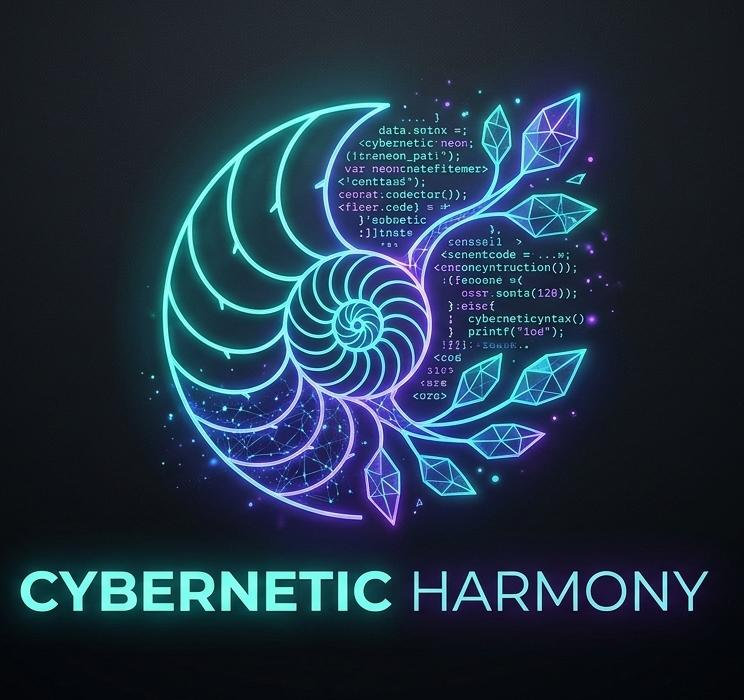

greetings;
hello everyone myself ali zain im firt year btech(cse-ai/ml) student at jss noida am a ai/ml enchurlist . i love technologies thats why i chose my carear as an software enginer i love to play chess the logo u might see this is my offical logo (not genrated by mine)
**GitHub Profile Context — `alizain-dev-ml`** I am an aspiring CSE (AI & ML) student focused on learning Java, Python, DSA, and software development through hands-on projects. My projects include a Java Music Player built using OOP, JDBC, database connectivity, and Java Sound libraries, along with a Calculator and Number Guessing Game. I also have private projects, including **Ludo** and **Snake & Ladder**, which are part of my personal coding journey but are not publicly visible. My goal is to strengthen my programming fundamentals, improve problem-solving skills, and gradually build more advanced, practical projects.